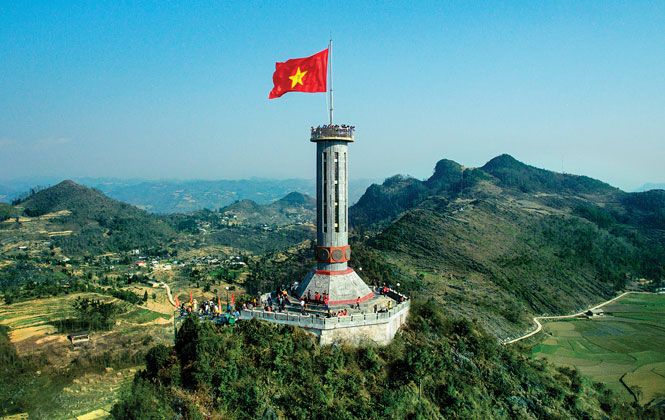
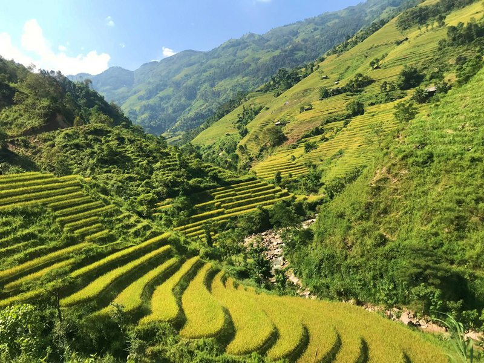
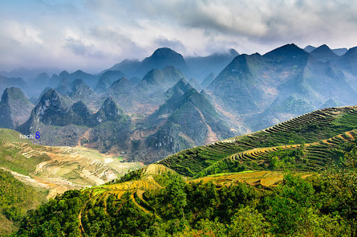

- TRANG CHỦ
- THỜI ĐIỂM NÊN ĐI
- PHƯƠNG TIỆN ĐI LẠI
- CHI PHÍ
>
Giới Thiệu Du Lịch Hà Giang
Hà Giang là một tỉnh của Việt Nam nằm ở vùng đầu phía Bắc, giáp với Lào Cai và Cao Bằng. Nơi đây có tổng diện tích
hơn 15.000 km2. Là một tỉnh vùng núi, Hà Giang sở hữu địa hình vô cùng hiểm trở với nhiều núi non trùng điệp có độ
cao dao động từ 800m đến 1200m so với mực nước biển. Đặc biệt, nơi đây cũng là vùng tập trung nhiều ngọn núi cao
nhất nhì cả nước.Thời tiết tại Hà Giang có hai mùa rõ rệt: mùa mưa và mùa khô. Mùa mưa diễn ra từ tháng 5 cho đến
tháng 9. Mùa khô diễn ra từ tháng 10 cho đến tháng 4 với nhiệt độ thường rất thấp và có thể xuất hiện tuyết tại
một số vùng. Nhiệt độ trung bình tại khu du lịch Hà Giang là khoảng 20-25 độ C vào mùa xuân, mùa thu, và vào mùa
đông là khoảng 15-20 độC.Khu du lịch Hà Giang sở hữu một vẻ đẹp rất riêng, rất ấn tượng khó nơi nào sánh được.
Vì thế, nơi đây luôn là địa điểm du lịch, khám phá hàng đầu của vùng Đông Bắc – Việt Nam. Bởi Hà Giang không chỉ
đẹp ở quang cảnh thiên nhiên núi non hùng vĩ. Mỗi mùa một sắc hoa. Mà còn hội tụ nền văn hóa đa dạng, bản sắc dân
tộc thu hút. Kèm theo đó là các cung đường đèo uốn lượn quanh co theo sườn núi khiến nhiều người muốn chinh phục.
Mời các bạn cùng khám phá về Hà Giang rõ hơn qua thông tin giới thiệu du lịch Hà Giang dưới đây nhé!

Theo giới thiệu du lịch Hà Giang thì tỉnh Hà Giang quanh năm đẹp, các bạn có thể du lịch nơi đây hoặc thực hiện
chuyến đi phượt của mình vào bất kỳ thời gian nào trong năm. Tuy nhiên để được khám phá được hết vẻ đẹp của vùng
cao nguyên đá này thì các bạn nên đến với khu du lịch Hà Giang vào những thời điểm sau
Tháng 1, tháng 2: Màu của hoa đào, hoa mận và hoa cải vàng khoe sắc
Mùa xuân đến, khắp nơi từ huyện Quản Bạ (Quyết Tiến, Minh Tân), Đồng Văn (Phó Bảng, Phố Cáo, Sủng Là, Sà Phìn,
Thài Phìn Tủng), Yên Minh (Lao Và Chải, Na Khê, Bạch Đích), đến huyện Mèo Vạc (Sủng Trà, Sủng Trái, Lũng Phìn),
nơi nơi phủ sắc hồng của hoa đào, sắc trắng của hoa mận, và cải vàng khoe sắc trên nền đá đen của cao nguyên đá,
với những nếp nhà trình tường mang dáng vẻ mộc mạc, bình yên.
Tháng 4, tháng 5: Mùa nước đổ
Đa phần các thửa ruộng tại vùng Tây Bắc đổ ải vào tầm tháng 5 và tháng 6, ít nơi sẽ rơi vào tháng 7, một vài
thửa có thể tích nước từ tháng 4.Theo giới thiệu du lịch Hà Giang tới Hà Giang vào thời điểm này, các bạn có thể
ngắm nhìn những cảnh đồng ruộng bậc thang nối tiếp nhau theo từng tầng, từng lớp đẹp như tranh vào mùa nước đổ ở:
núi đôi Quản Bạ, Hoàng Su Phì hay những thửa ruộng nhỏ điểm xuyết bên con đèo Mã Pí Lèng…
Tháng 9, tháng 10: Mùa lúa chín
Giới thiệu du lịch Hà Giang vào thời điểm tháng 9, tháng 10. Đây là thời điểm tiết trời Hà Giang đã chuyển mình
vào thu, hình ảnh những thửa ruộng bậc thang, thung lũng dưới chân đèo được phủ lên một tấm áo mới vàng rực,
đẹp như tranh khiến không ít người cảm thấy nao lòng.
Tháng 11 và 12: Mùa hoa tam giác mạch
Cứ vào khoảng cuối tháng 10, cho đến tháng 12 Hà Giang thu hút một lượng lớn khách du lịch đến đây để ngắm hoa
tam giác mạch. Những bông hoa tam giác mạch tim tím, phớt hồng trải khắp những sườn đồi, tạo nên một khung cảnh
thơ mộng, dịu dàng đầy cuốn hút.

Giới thiệu về điểm du lịch Cao nguyên đá Đồng Văn
Cao nguyên đá Đồng Văn (Sơn nguyên Đồng Văn) là một cao nguyên đá trải rộng trên 04 huyện là huyện Quản Bạ,
Yên Minh, Đồng Văn, Mèo Vạc. Cao nguyên đá được UNESCO chính thức công nhận là Công viên địa chất toàn cầu
vào ngày 3 tháng 10 năm 2010.

Cổng trời và núi đôi Quản Bạ
Cổng trời Quản Bạ có độ cao khoảng chừng 1500m so với mặt biển, đây là cửa ngõ đầu tiên để lên với cao nguyên
Đồng Văn. Năm 1939, người ta dựng một cánh cửa khổng lỗ bằng gỗ nghiến có độ dày 150cm ở ngay Cổng trời.
Một thời, sau cánh cửa gỗ này là một “thế giới” khác, hay còn gọi là “Vùng tự trị của người Mèo”, gồm các
huyện như huyện Quản Bạ, huyện Mèo Vạc,Yên Minh và Đồng Văn Núi Đôi Quản Bạ nằm ngay cạnh quốc lộ 4C, cách
thị xã Hà Giang chừng 40 km. Giữa núi đá và ruộng bậc thang trùng điệp, nổi lên 02 trái núi có hình dáng kỳ lạ,
khiến mọi du khách không khỏi ngỡ ngàng trước vẻ đẹp kỳ vĩ của tạo hóa. Hai trái núi này gắn với câu truyện
truyền thuyết Núi Cô Tiên thi vị.

Giới thiệu địa điểm Đèo Mã Pí Lèng
Mã Pí Lèng, tên gọi theo tiếng Quan Hỏa với nghĩa đen chỉ “sống mũi con ngựa”. Theo nghĩa bóng tên gọi này nói
lên sự hiểm trở bậc nhất của đỉnh núi, nơi những con ngựa cái leo lên đến đỉnh trụy thai mà chết, nơi sở hữu
con dốc cao đến mức con ngựa đi qua phải tắt thở, hoặc các đỉnh núi dựng đứng như sống mũi con ngựa. Tuy nhiên,
theo một số người H’mông bản địa thì tên đúng của đèo là Máo Pì Lèng, giải nghĩa là “sống mũi con mèo”.Đỉnh Mã Pí
Lèng thuộc 03 xã,gồm xã Pải Lủng, Pả Vi và Xín Cái (Mèo Vạc, Hà Giang) trong cao nguyên đá Đồng Văn với độ cao chùng
2000m so với mặt nước biển, được tạo nên bởi một loạt trầm tích đá phiến ánh, đá vôi, đá vôi silic chứa các hóa thạch
cách đây khoảng 426 triệu năm, bao gồm trong đó có nhiều vết trượt và vết nứt do các hoạt động tạo núi gây ra.

Ngoài những địa danh tham quan nổi tiếng trên, theo thông tin giới thiệu du lịch Hà Giang , các bạn đừng bỏ lỡ cơ
hội trải nghiệm chèo thuyền trên sông Nho Quế, ngắm cảnh ruộng bậc thang vào mùa nước đổ và mùa lúa chín tại Hoàng
Su Phì, tham quan nhà của Pao, dinh thự họ Vương (dinh thự vua Mèo); khám phá động Én, động Lùng Khúy, cắm trại
tại rừng thông Yên Minh,….Đến với du lịch Hà Giang thuộc vùng Tây Bắc con người sẽ được cảm nhận những điểm mới mẻ mà nơi
đây đem laị cho những du khách đến trải nghiệm.